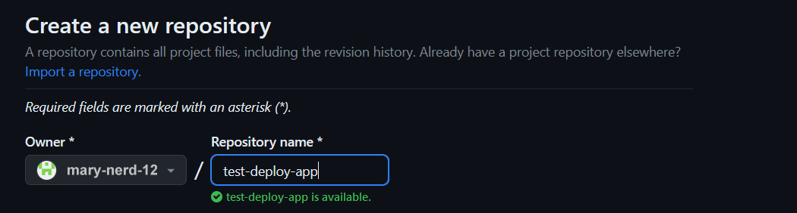
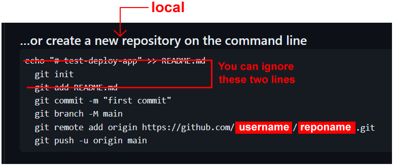
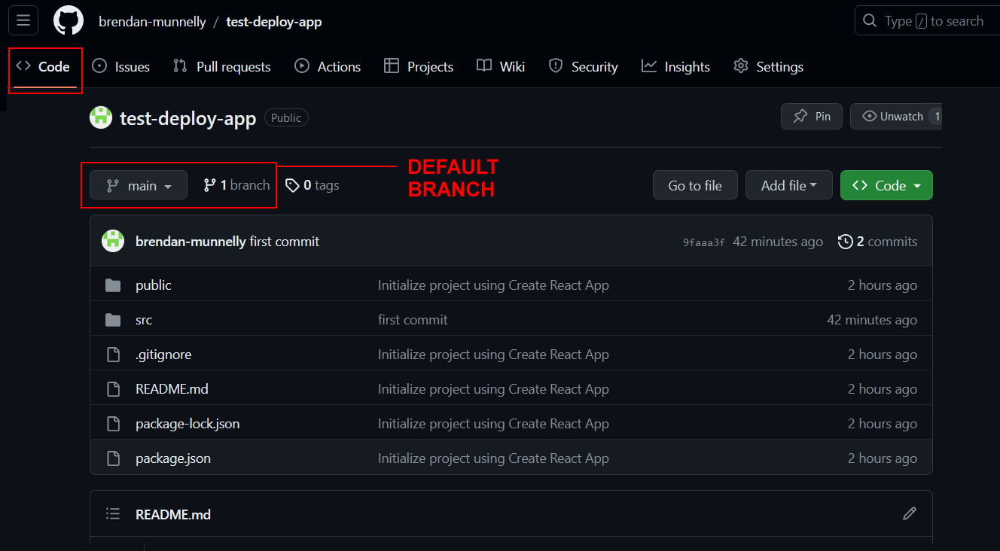
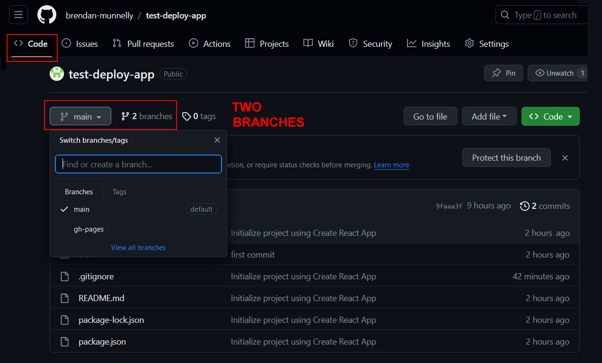

Learning Goals
At the end of this Tutorial, you will be able to:
- Run the build option within the create-react-app script to create a production-ready version of a ReactJS app.
- Deploy the build version of an app to GitHub Pages.
The build option in create-react-app
Creating a ReactJS app with the create-react-app script generates a huge number of files with a very large total file size.

Clearly, it would not be practical to deploy all these files to a remote web server.
The good news is that create-react-app includes options to:
- Build a minimal version of your app by bundling the modules and assets with Webpack, and optimising the code.
- Deploy the minimal version to a remote web server such as GitHub Pages.
A typical ‘build’ version of a ReactJS app might be about 500 KB in total file size.

DO NOT deploy your app’s 39,000+ files from your local machine to your account on GitHub or other remote server.
DO use the build option in create-react-app to create a miminal (about 500KB) version of your app, and deploy that version to GitHub.
Let’s look at these steps in more detail.
1: Create a test-deploy-app
Begin by creating a simple app that you will deploy to GitHub. Here are the steps:
- In a Command prompt or VS Code Terminal, navigate to where you want ReactJS to create a folder for your app. For example:
C:\> react-stuff\apps
- Type the following command that includes the name you want to call your new app. For example, test-deploy-app.
npx create-react-app test-deploy-app - When the process completes, navigate to the folder that contains your new app. For example:
C:\> react-stuff\apps\test-deploy-app
- Enter this command:
npm start - A new browser window should display with your new app running on the ReactJS local development server. You will see a screen similar to the following.

- In the /src folder of your new app, open the App.js file and edit the text on about line 10 as follows.

- In your web browser, the app should display as shown below.

2: Create a new repo on GitHub
On GitHub, your app will be stored in a new repo separate from all your other folders and files. Follow these steps:
- Sign into your GitHub account and create a new repo to host your app.

- Give your new repo a name. For example, test-deploy-app 
- Do not initialise the new repo with a description, README, license, or .gitignore files.
 Your repo should be empty.
Your repo should be empty. - Click the green Create repository button
- GitHub displays a screen that includes instructions for setting up a local repo for your new app. 
3: Create a new repo on your local machine
Leave the GitHub screen open in your web browser, and switch back to your Command prompt or VS Code Terminal.
C:\> react-stuff\apps\test-deploy-app
- Enter the following command to place your app folder under Git version control.
git init - Enter this command to add this folder’s contents to Git.
git add . - Commit your app to Git with a descriptive message.
git commit -m "first commit"
- Give your default branch a name. For example, main:
git branch -M main
An alternative name would be master.git branch -M master
It’s just a name. Use one or the other. But not both
You have now finished setting up the local and remote repos for your app.
4: Linking repos and pushing local to remote
Next, you need to connect your local repo to your remote repo on GitHub. Once you have done that, you can ‘push’ your app from your local machine to GitHub.
- Link your local Git repo to your remote GitHub repo with a command in this syntax.
git remote add origin https://github.com/username/reponame.gitReplace username with your GitHub username. And replace reponame with the name of your new repo. For example:git remote add origin https://github.com/mary-smith-100/test-deploy-app.git - Now, upload your local repo to the remote repo on GitHub. In the example below, the default branch has the name of main.
git push -u origin main
- You may receive a message stating you are not authenticated.

If you see this message, you need to create a personal access token on GitHub.
5: Create a personal access token on GitHub
To be completed.
6: Verify your app has been deployed
To check your app has been deployed to GitHub, do the following.
- In your browser, display your app’s GitHub repo. Ensure the Code tab is selected.
- You should see a screen similar to the following. 
Where is the /node_modules folder?
As you can see, Git has not pushed the /node_modules folder from your local machine to the GitHub repo.
That is because the create-react-app script places the /node_modules folder in the .gitignore file.
Your ReactJS app is deployed - but not hosted
Your app has been deployed or ‘pushed’ to GitHub. The remote repo has all the files needed for anyone to download your app from GitHub and install it on their local machine.
But your app is not yet hosted on GitHub. It cannot run and display web pages as it can on a local machine. To host your ReactJS app on GitHub, you need to use GitHub Pages.
ReactJS has added a README.md file
By default, the create-react-app script adds a README.md file. You can edit this later.
7: Set up the GitHub Pages branch for your app
Your next step is to set up a gh-pages branch to which you will commit and deploy your app.
In a Command prompt or VS Code Terminal, enter the following command in your app folder:
npm install gh-pages --save-dev
8: Set up a sub-folder for GitHub Pages
By default, the create-react-app script assumes your ReactJS app will hosted at the server root. On GitHub Pages, the server root will be:
https://username.github.io
Typically, this is not what you want.
Instead, you will want to host your app in a sub-folder. It's hosted web address will then be:
https://username.github.io/reponame
For example:
https://johnsmith.github.io/todos
https://johnsmith.github.io/spa
https://johnsmith.github.io/blog
To override this default, open your app’s package.json file and add the following line after the opening curly brace { at the top of the file:
"homepage": "https://username.github.io/reponame/",
The top part of your package.json file should now look something like this:

9: Add two deploy scripts to package.json
In the scripts section of the same package.json file, add these two lines:
"scripts": {
// ... other scripts here,
"predeploy": "npm run build",
"deploy": "gh-pages -d build"
}
Your scripts section should now look something like this:

10: Create the build version of your app
Follow the steps below :
- In a Command prompt or VS Code Terminal, enter the command below in your app folder:
npm run build - When the process completes, you should see a message similar to the following:

Running the build script creates a new sub-folder named /build inside your app folder.
11: Deploy your app for hosting
After completing all the above steps, run this command inside your app folder:
npm run deploy
You should now see a message like that below.

✅ Success!
After a few minutes, you can now access your hosted ReactJS app at a web address in the following format:
https://username.github.io/reponame
12: Verify both branches are uploaded
When you view the GitHub repo of your app, with the Code tab selected, it should look similar to that below.
As you can see, your app has two branches:
- main: This is the default branch that contains the deployed code for your app. It is often named the master branch. If you wanted to download your app, this is the branch you would download from.
- gh-pages: This contains the extra files needed for your app to be hosted and run remotely on GitHub, just as it would on your local web server.
Updating your deployed/hosted ReactJS app
Over time, you may make changes to your app and wish to host the new version to GitHub Pages. Here are the steps:
- Update and save your app on your local server.
- From inside your app folder, update the build version of your app.
npm run build - Add file updates and any new files to your local repo.
git add . - Commit the latest version of app with a descriptive message.
git commit -m "Fixed bugs and added cool new features."
- Finally, deploy your updated app for hosting.
npm run deploy
✅ That’s it. Both the main (or master) and gh-pages branches will be updated.